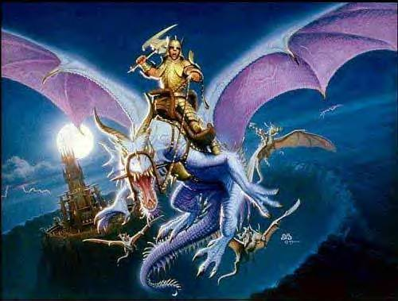

Forums galactiques > Poubelle publique de l'assemblée galactique > Poubelle automatique
luffy 13/06 ETU 18:51 | Une démocratie? oui mais plus de rébellion car certain commandant on soif de pouvoir. Certain commandant aussi aime la monarchi pas absolue mais avec des roi sous roi valet vasseaux ... le plaisir du jeu tout entier et donc concernée. |
luffy14/06 ETU 12:48 | Le commandant luffy revenit voir les résultats encore non afiché: "pour moi le chef, sous chef serait comme des commandant au dessu d'autre qui on fait leur preuve (en guerre ou en diplomatie) chargé de minimisé les guerres ou alors les faire éclatées. les commandant je ne peut les cités, mais c'est tout la le plaisir de jeu d'avoir une monarchie. Dans une monarchies il faut payé et être pauvre ce la je ne le veut pas, juste une organisation cherchant a dirigées, si le président décide de se rébéllé (ce qui sera assez fréquent que dans une monarchie) nous devons recommencé et ainsi de suite..., la monarchie n'est pas une soumission juste une sorte de diplomatie un peu plus rude. Surtout j'insite sur ce point la: pas de monarchi absolue je ne veut pas que par un simple désir de plaisir de jeu tout les commandants subissent une tyranie et soit détruit. Pour moi ce plaisir serait comme un plaisir d'avoir une personne qui nous protègent |
red 14/06 ETU 13:53 | A cette abomination que vient de dire le commandant luffy qui au passage aussi vide que son cerveau le commandant red répond : RETOURNER VOUS COUCHER COMMENDANT LUFFY SA VODRIER MIEUX POUR CETTE NOBLE ASSANBLé. |
red14/06 ETU 21:54 | Dans le chaos rien ne peut se construire alors pourquoi s'obstiner à vouloir cette constitution.Nous somme des hommes donc on est voué à détruire se qu'on à construi.Alors quand la constitution tombera il y aura beaucoup de tristesse dans les coeurs des commandants qui sont pour la constitution sa pourrait les amenais à se suisider.évitons nous une pêne qui peu être éviter.Le chaos est plus amusant si tous le coeur y est. ARRêTER LE PROJET GALAXIA SA VOS MIEUS POUR TOUS LE MONDE. |
alexandre 15/06 ETU 19:30 | Le commandant ce leva a nouveau Il y a pourtant un mode vacance qui évite ce problème. et se rassit aussi rapidement qu'il s'était levé pour méditer. |
lord lemoi 19/06 ETU 15:24 | tu est mal tombé car thegrumo je le connais c'est un de mes potes par contre je ne savais pas qu'il t'attaquais! |
Aruzan 21/06 ETU 17:18 | Laissez mon ami !!!! |
Aruzan21/06 ETU 20:38 | . |
| L'AntéChrist  23/06 ETU 11:13 | Salutations à toi, Lord !Tu ne te souviens pas de moi ,car j'ai changé de nom .Tout ce que je peux te dire c'est que je m'appellai "L'homme-tempête" mais en anglais et je voudrais dire aux autres commandants que la coalition de Lord Oblivion 2 est la meilleure de toute les galaxies alors demandez-lui des invitations par MP ! |
Dr Jeckil29/06 ETU 02:06 | bonjour a tous les commandants! desolé ca n'a rien a voir avec les elections mais... je voulais simplement savoir qui était avec moi dans le systeme 401 voilà c'est tout! |
progress 29/06 ETU 09:59 | amen |
red30/06 ETU 08:30 | Moi commandent Red m’oppose toujours à cette démocratie équerrent (et il vomie). En plus vous avait élus un éscro, un manipulateur je dirait méme un despote. Je suis sur que vous aller me demander des preuves mais les preuves ses vous.Vous êtes des despotes sur vos plantes vous les avez conquit grâce à de grande manipulation.Encore que la manipulation est autoriser par la démocratie.Ba oui pour se faire élire il faut manipuler les votants. Je n’engagerais aucun action contre le gouvernement je veut juste vous ouvris les yeux. |
red30/06 ETU 16:42 | Moi commandent Red m’oppose toujours à cette démocratie équerrent (et il vomie). En plus vous avait élus un éscro, un manipulateur je dirait méme un despote. Je suis sur que vous aller me demander des preuves mais les preuves ses vous.Vous êtes des despotes sur vos plantes vous les avez conquit grâce à de grande manipulation.Encore que la manipulation est autoriser par la démocratie.Ba oui pour se faire élire il faut manipuler les votants. Je n’engagerais aucun action contre le gouvernement je veut juste vous ouvris les yeux. |
red30/06 ETU 18:15 | J'ai précisé que je ne t’enterais aucune action pour l'instant car sinon je me serais fait attaquer et je n’aurais pas les forces utiles pour répliquer. |
Yoda Master 06/07 ETU 08:07 | Histoire en parallèle avec Yoda : Oxis L'Histoire d‘Oxis. La Saga du plus Puissant des Orks ! Oxis est l’un des personnages les plus craints du Monde , et nains, elfes et humains ont tous leur lot d’histoires terribles sur son compte. Les mères de famille n’hésitent pas à se servir de lui comme croquemitaine pour que leurs bambins se tiennent tranquilles. Quant aux nains, des pages entières de leurs Livres des Rancunes sont dédiés à ce redoutable peau-verte. Enfin les elfes sylvains ne font que murmurer son nom, persuadés qu’il s’agit de la réincarnation d’un ancien démon qui hantait jadis les frondaisons d’Athel Loren. Même les abjects skavens tremblent et libèrent le musc de la peur lorsqu’il est mentionné en leur présence. On ne sait rien de l’histoire ancienne de Oxis. Le seul ork assez fou pour l’avoir questionné sur son passé rejoignit dans un trou les restes du précédent Seigneur de Guerre des Yeux Jaunes. Oxis et ses Gardes du Corps étaient sortis un jour du Désert Foudroyé, chancelants et couverts de sang et de cicatrices. Ces quelques orks étaient tous fatigués et affamés, mais ils étaient armés jusqu’aux dents, et semblaient avoir survécu à de nombreux combats. Certaines de leurs blessures semblaient récentes, mais personne n’osa plus rien leur demander car ils compensaient leur nombre réduit par leur brutalité impitoyable. Oxis prit facilement la tête de la première tribu orque qu’il rencontra, conquit la seconde et extermina la troisième. Il voulait toujours plus de tueries. Même pour un orque, sa soif de batailles semblait incroyable. S’il ne combattait pas pendant plus d’une journée, il cherchait querelle à tous ceux qu’il croisait, son œil valide cerclé de cicatrices à l’affût de la moindre faute. Au bout de deux jours, il tuait tout gobelin assez malchanceux pour lui tomber sous la main. Oxis ne recherchait rien d’autre qu’une éternelle bataille et pour un orque, cela prédispose à être chef. Pour un énorme orque noir accompagné d’une telle suite, cela prédispose à la grandeur. Un mois après son arrivée, il s’était forgé un petit empire dans la partie nord des Montagnes du Bord du Monde, et les peaux-vertes s’étaient ralliés à sa bannière par milliers. Les nains de Karak Kadrin furent les premiers de leur race à connaître sa colère lorsqu’il se jeta sur eux avec une férocité démente. Ceux qu’il ne tua pas, il les fit prisonniers pour les torturer, leur arracher la barbe poil par poil, ou chauffer leur armure jusqu’à les faire cuire. Il ne tenta jamais de prendre la forteresse elle-même, se contentant de massacrer ceux qui étaient envoyés contre lui jusqu’à ce que les nains, désespérés par leurs pertes, s’enterrent dans leurs défenses pour attendre l’hiver. Oxis ne voulut pas attendre, il repartit vers le nord et traversa le Col du Pic pour trouver de nouvelles victimes à Kislev. Malgré la vaillance des Kislévites et leur habitude des rigueurs de l’hiver, la violence de l’attaque de Oxis fit chanceler leurs forces. Ils envoyèrent trois armées pour l’arrêter, Oxis les massacra et mangea les cadavres par manque d’autre nourriture. Mais alors qu’il approchait de la capitale, les prières de la Reine des Glaces furent entendues et une tempête de neige vint ralentir les peaux-vertes. Toute l’armée fut soudain enveloppée d’un manteau de glace tourbillonnante qui sema la confusion dans leurs rangs. Les gobelins aveuglés geignaient et les oroks les faisaient avancer à coups de pied, mais les repères du chemin disparaissaient dans un labyrinthe de blancheur. Après avoir avancé à tâtons pendant une journée, Oxis ordonna une halte et s’assit pour réfléchir. Frustré et furieux de cette halte forcée, il démembra de nombreux gobelins : heureusement, la horde en comptait des centaines. Bientôt, les chamanes orks parlèrent de sorcellerie et selon eux, la tempête n’était pas naturelle. Le lendemain, Oxis ordonna à son armée de repartir vers les montagnes. Sur le chemin du retour, la tempête sembla se calmer, mais à chaque tentative de marcher à nouveau sur Kislev, les vents se déchaînaient et criblaient les orks de glace. Oxis retourna dans les Montagnes du Bord du Monde empli d’une rage qui présageait du pire pour ceux qui se mettraient sur son chemin, qui se trouvèrent être les skavens du Clan Mors. Il avait décidé d’établir une base d’où lancer ses attaques, et l’ancienne forteresse naine de Karak Ungor lui sembla parfaite. La plupart des gobelins de l’Oeil Rouge qui y vivaient étaient déjà soumis à Oxis, et le peu qui ne l’étaient pas changèrent vite d’avis. C’est dans les profondeurs des tunnels que Oxis trouva de vrais adversaires, et bientôt les anciennes salles s’emplirent du bruit des batailles. Mois après mois, les combats firent rage, des milliers de skavens et de peaux-vertes moururent pour chaque pièce et chaque couloir. De temps à autre, Oxis pensait les skavens détruits, et tombait sur un nouveau passage secret regorgeant de vermine. N’ayant pas de carte du dédale de galeries que les skavens et les Gobelins de la Nuit n’arrêtaient pas de creuser, Oxis se retrancha dans les niveaux supérieurs, laissant ses soldats se battre dans les profondeurs. Il avait trouvé exactement ce qu’il voulait : une éternelle bataille. |
La F.F.C 07/07 ETU 10:38 | je crois bien que j'aurais pu gagner(plusieurs adresse de messagerie a creer....mais sa met 20ans,et en plus c'est completement nul de gagner comme sa...) |
Jean XXX09/07 ETU 20:22 | Qu il soit dit a tous, fidèles et croyants, agneaux du Seigneur, membres de notre Sainte Eglise Catholique, Apostolique Romaine ce qui suit : Cette légénde est Hérésie ! Elle reflete une vision manichéenne du principe divin. Ces conceptions fausses furent condamnées par les pères de l Eglise au concile de Chalcedoine en l'an 451 apres la Naissance du Sauveur. Il n existe pas de Lucifer egal a Dieu et en guerre contre lui ! Lucifer et Satain sont deux notions differentes : - Lucifer est le porteur de lumiere. Certains eveques on porté ce nom!. Lucifer symbolise celui qui fait le mal en croyant bien faire. - Satan symbolise le mal pur, animal, bestial, sournois et mal intentionné. Celui qui prend plaisir a mal faire. Tout deux n existe que car Dieu a laissé a l Homme le libre arbitre !... choix entre bien et mal ... Il n est nulle guerre en les cieux ! Amen |
Jean XXX10/07 ETU 19:12 | puisque tu as choisi de repondre dans le message initial, je ferai de même .. 1/ tu demande a etre respecter.. alors attache toi aussi a respecter autrui quand au ton que tu emploies dans tes messages 2/ mon "rp" est parfaitement compatible avec trolls et toutes autres sortes de creatures.. la bible ne parle pas des ornythorinques.. mais pourtant ils existent... 3/ ton "rp" est une jolie histoire.. qui n a pas grand chose a voir avec une conquete galactique.. et pretend a une verité historique (une geuerre bien/mal) qui elle n'a aucxcune realité historique.. alors que mon "rp" se rattache a une tres lintaine epoque (la terre des origines) et aux bribes de souvenirs qui nous en reste... |
Jean XXX10/07 ETU 19:16 | j ai oublié de dire toute l "estime" que m inspire la phrase "encore une pollution de ce genre et c'est un aller simple..." alors voici un 2eùme post... avoir d immenses flottes ne fait pas de toi un DM... au plus cela peut faire de toi un GB... |
La F.F.C10/07 ETU 23:19 | (je sais qu'on ne dois pas poster ici,je m'en excuse mais je voulais juste dire que j'adore ton Rp sandalphon il est super!Maintenant voter le triangle anti boulet pour que reste ce joli Rp qui m'apporte joie et bonheur quand je le lit.) |
Forums galactiques > Poubelle publique de l'assemblée galactique > Poubelle automatique